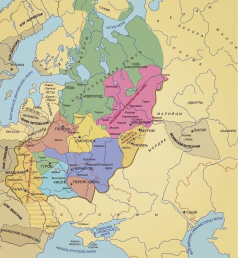

Три эпохи. Три судьбы. Один путь к величию.

Сравните двух великих князей по пяти ключевым параметрам (субъективный вгляд летописцев)
9 вопросов о трёх великих князьях. Докажите, что достойны звания хранителя истории.
Вопрос 1 из 9
Вопросы перемешаны случайно. Очки за мини-квизы уже учтены — теперь завершите испытание и узнайте своё звание.